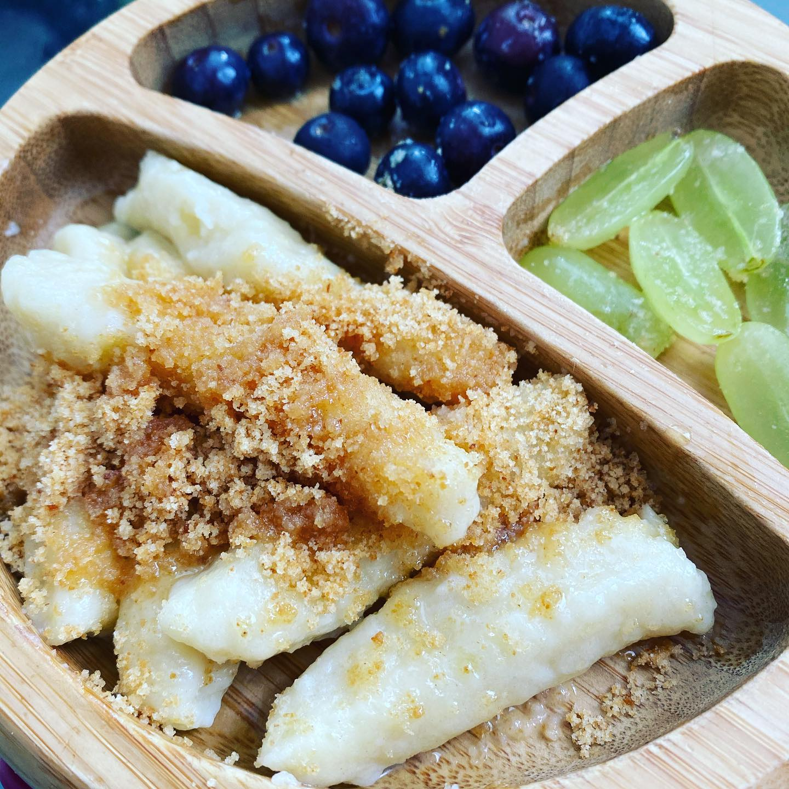

Zemiakové šúľance podľa @conatanierik_blw — Normy Jedál
Zemiakové šúľance s opraženou strúhankou a domácou karamelovou polevou.
Keďže som robila svoje prvé zemiakové šúľance ever, tak som šla podľa receptu
400g uvarených zemiakov v šupke, 100g polohrubej múky, vajíčko , 30 g maslo a sol, no keď som videla, že konzsitenčne to malo od vláčneho -šúlancového cesta na mraky ďaleko , pridala som asi ďalších 200 g múky. Z cesta sa Vám musia dať vytvarovať šúľance tak, aby sa Vám nelepili na podložku a nechcelo sa Vám to celé šupnúť do koša 😅 nechala som zovrieť osolenú vodu a šúlančeky tam opatrne postupne nahádzala- keď vyplávali na povrch, varila som ich ešte cca 4 minútky . Z vody som ich vyberala dierkovanou naberačkou a vkladala do misky s roztopeným maslom.
Strúhanku som opiekla na troche masla kým chytila tú správnu farbu - pozor, treba to stále miešať a strážiť ( pohybujete sa na tenkom ľade )
karamel :
1 šľahačka
50g masla
200 g cukru
60 ml vody
Cukor s vodou dáme do vyššieho hrnca a necháme karamelizovať kým nezačne hnednúť- nemiešame žiadnou vareškou, len chytíme hrnček za uši a krúživými pohybmi občas premiešame. Medzitým zohrejeme šľahačku s maslom - čím teplejšie - tým lepšie- eliminujeme vznik hrudiek
Keď je cukor skaramelizovaný, za stáleho miešania vlejeme horúcu šlahačku s maslom a miešame metličkou, kým sa zmes celkom spojí.
Šúľance boli makkučké ako obláčik, a onedlho ich budem robiť určite zase... 😏👌🏻
BTW: Na večeru mali úspech aj s Lučinou
#zemiakovesulance #sulance #blwideas #blwslovakia #lunchforkids #obed